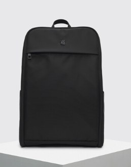
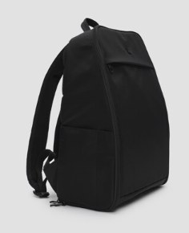
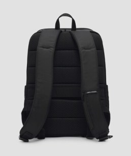
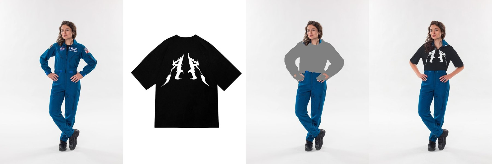
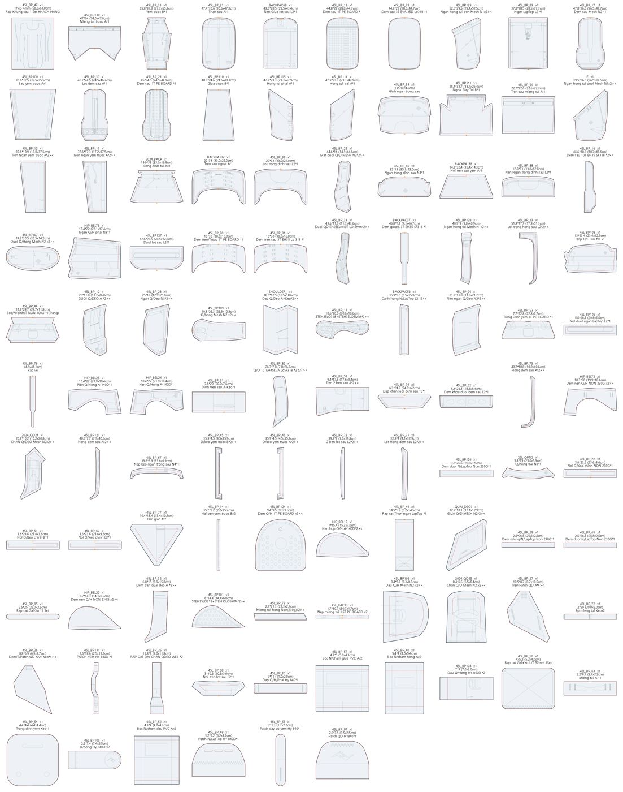
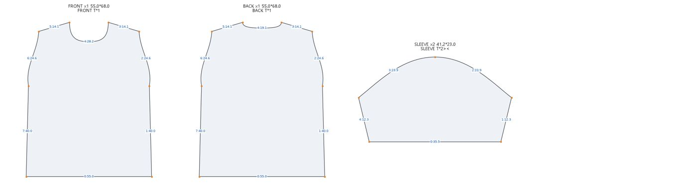

이미지 3D 변환 비교
모델: TripoSR (stabilityai/TripoSR, MIT) · 추론: OpenVINO 2026.4 · 배경 제거: rembg isnet-general-use
Intel i7-1260P 노트북 · Iris Xe 내장 GPU · NVIDIA GPU 없음 · 메시 해상도 384 · 텍스처 2048px · 최적화 = 텍스처 굽기 전 면 수 6만 개로 축소
| 항목 | 기본 시간 | 면 수 | 용량 | 최적화 (면 6만 개) 시간 | 면 수 | 용량 |
|---|---|---|---|---|---|---|
| 핸드백 | 166초 | 169,452 | 6.4MB | 71초 | 60,000 | 4.0MB |
| 백팩 | 280초 | 280,732 | 9.4MB | 55초 | 60,000 | 4.2MB |
| 티셔츠 (바닥에 펼친 사진) | 140초 | 176,740 | 5.4MB | 65초 | 60,000 | 2.7MB |
| 재킷 (마네킹) | 385초 | 208,980 | 7.4MB | 60초 | 60,000 | 3.8MB |
| 드레스 (드레스폼) | 349초 | 180,492 | 6.6MB | 89초 | 60,000 | 3.7MB |
| 운동화 (두 짝) | 134초 | 138,320 | 5.0MB | 62초 | 60,000 | 3.3MB |
핸드백
입력 사진
기본
최적화 (면 6만 개)
백팩
입력 사진
기본
최적화 (면 6만 개)
티셔츠 (바닥에 펼친 사진)
입력 사진
기본
최적화 (면 6만 개)
재킷 (마네킹)
입력 사진
기본
최적화 (면 6만 개)
드레스 (드레스폼)
입력 사진
기본
최적화 (면 6만 개)
운동화 (두 짝)
입력 사진
기본
최적화 (면 6만 개)
구현
이번에 구현한 내용 · 1 · 2 · 3단계 시험 (실제 상품 데이터: 45L 백팩)
상품 사진 9장과 패턴 파일(DXF, 106조각)을 받아 세 단계를 모두 같은 노트북(외장 GPU 없음)에서 돌렸습니다. 각 단계는 g3d 패키지 안에서 인터페이스와 백엔드로 분리되어 있어, 나중에 모델이나 시뮬레이터만 교체할 수 있습니다.
1단계사진 → 3D (TripoSR, 사진 1장씩)
앞 사진

왼쪽 사진

뒤 사진

정면 사진은 깊이 정보가 없어 상자처럼 두껍게 나왔습니다. 비스듬한 왼쪽 사진이 어깨끈까지 가장 잘 나왔고, 뒤 사진은 등판과 끈 형태가 나왔습니다. 사진 1장당 75~92초입니다. 다음 단계는 여러 장을 한 번에 입력해 하나의 3D로 만드는 다중 사진 모델로 교체하는 것이며, 그 자리는 g3d/stage1_image3d 백엔드로 비워 두었습니다.
2단계사람 사진 + 옷 사진 → 착용 이미지 (2D 이미지 합성, CLO 방식 아님)
사람 사진옷 사진자동 마스크결과

이 단계는 CLO 기능이 아닙니다. CLO는 3D 아바타에 패턴을 봉제해 입히지만(아래 3단계 방식), 2단계는 사람 사진 위에 옷 사진을 AI로 합성해 착용 이미지 한 장만 만드는 지름길이며 3D 모델·패턴·핏 검증이 없습니다. CatVTON을 CPU에서 돌리도록 백엔드를 만들었고, 옷을 갈아입힐 영역(마스크)은 사람 파싱 모델(SCHP)로 자동 생성합니다. 원래 NVIDIA GPU에서 10초 안팎인 작업이라 이 노트북에서는 수 분이 걸리며 해상도도 낮춰 돌렸습니다. 가방에는 해당되지 않는 기능이라 사람 사진은 공개 자료, 옷은 앞서 시험한 티셔츠 사진을 썼습니다.
3단계패턴 → 봉제 시뮬레이션 → 3D (CLO 방식)
패턴 파일 (106조각, 치수·수량·용도 표기)

조각 반영 현황 (역할별)
| 역할 | 조각 수 | 반영 |
|---|---|---|
| 철심·프레임 | 1 | 0 |
| 겉감 (형상) | 12 | 6 |
| 안감·내부 포켓 | 24 | 4 |
| 패딩·보드·심지 | 40 | 18 |
| 어깨끈·힙벨트·손잡이 | 19 | 4 |
| 마감·보강·부자재 | 9 | 0 |
| 미분류 | 1 | 0 |
106조각 전체 목록
| 조각 | 수량 | 용도(패턴 주석) | 역할 | 반영 방식 |
|---|---|---|---|---|
| 45L_BP_47 | 1 | Rap Khung sau 1 Set KHACH HANG | 철심·프레임 | - |
| 45L_BP130 | 1 | Mieng tui truoc A*1 | 겉감 (형상) | - |
| 45L_BP_31 | 1 | Yem truoc B*1 | 겉감 (형상) | 형상 → FRONT |
| 45L_BP_21 | 1 | Than sau A*1 | 겉감 (형상) | 형상 → BACK |
| BACKPAC68 | 1 | Nen Giua lot sau L2*1 | 안감·내부 포켓 | - |
| 45L_BP_19 | 1 | Dem sau 1T PE BOARD *1 | 패딩·보드·심지 | 물성 → BACK |
| 45L_BP_79 | 1 | Dem sau 3T EVA 35D Lo318 *1 | 패딩·보드·심지 | 물성 → BACK |
| 45L_BP129 | 1 | Ngan hong tui tren Mesh N1x2>< | 안감·내부 포켓 | - |
| 45L_BP_83 | 1 | Ngan LapTop L2 *1 | 안감·내부 포켓 | - |
| 45L_BP_17 | 1 | Dem sau Mesh N2 *1 | 패딩·보드·심지 | 물성 → BACK |
| 45L_BP100 | 1 | Sau yem truoc Ax1 | 겉감 (형상) | 물성 → FRONT |
| 45L_BP_30 | 1 | Lot dem sau A*1 | 패딩·보드·심지 | 물성 → BACK |
| 45L_BP_23 | 1 | Dem sau 1T PE BOARD *1 | 패딩·보드·심지 | 물성 → BACK |
| 45L_BP110 | 1 | Giua truoc B*1 | 겉감 (형상) | - |
| 45L_BP115 | 1 | Hong tui phai A*1 | 겉감 (형상) | 형상 → SIDE_R |
| 45L_BP114 | 1 | Hong tui trai A*1 | 겉감 (형상) | 형상 → SIDE_L |
| 45L_BP_39 | 1 | Hinh ngan trong sau | 안감·내부 포켓 | - |
| 45L_BP111 | 1 | Ngoai Day Tui B*1 | 안감·내부 포켓 | 형상 → BOTTOM |
| 45L_BP_59 | 1 | Tren sau mieng tui A*1 | 겉감 (형상) | - |
| E | 1 | Ngan hong tui duoi Mesh N1x2>< | 안감·내부 포켓 | - |
| 45L_BP_12 | 1 | Tren Ngan yem truoc A*2>< | 안감·내부 포켓 | 형상 → POCKET_L, POCKET_R |
| 45L_BP_11 | 1 | Nen ngan yem truoc A*2>< | 안감·내부 포켓 | 물성 → POCKET_L, POCKET_R |
| 2024_BACK | 1 | Trong dinh tui Ax1 | 안감·내부 포켓 | - |
| BACKPA132 | 1 | Tren sau ngoai A*1 | 겉감 (형상) | 형상 → TOP_BACK |
| 45L_BP_89 | 1 | Lot trong dinh sau L2*1 | 안감·내부 포켓 | - |
| 45L_BP_29 | 1 | Mat duoi Q/D MESH N2*2>< | 어깨끈·힙벨트·손잡이 | 형상 → STRAP_L, STRAP_R |
| 45L_BP_66 | 1 | Ngan trong dinh sau N4*1 | 안감·내부 포켓 | - |
| BACKPA138 | 1 | Noi tren sau yem A*1 | 겉감 (형상) | - |
| 45L_BP_88 | 1 | Nen Ngan trong dinh sau L2*1 | 안감·내부 포켓 | - |
| 45L_BP_16 | 1 | Dem sau 10T EH35 SF318 *2>< | 패딩·보드·심지 | 물성 → PAD_L, PAD_R |
| 45L_BP107 | 1 | Duoi Q/Hong Mesh N2 x2>< | 어깨끈·힙벨트·손잡이 | - |
| HIP_BELTS | 1 | Ngan Q/H phai N3*1 | 안감·내부 포켓 | - |
| 45L_BP127 | 1 | Duoi lot sau L2*1 | 안감·내부 포켓 | - |
| 45L_BP_80 | 1 | Dem tren/T/sau 1T PE BOARD *1 | 패딩·보드·심지 | 물성 → TOP_BACK |
| 45L_BP_81 | 1 | Dem tren sau 3T EH35 Lo 318 *1 | 패딩·보드·심지 | 물성 → TOP_BACK |
| 45L_BP_33 | 1 | Duoi QD EH25EVA10T LO 5mm*2>< | 패딩·보드·심지 | 물성 → STRAP_L, STRAP_R |
| BACKPAC37 | 1 | Dem giua/S 3T EH35 SF318 *1 | 패딩·보드·심지 | 물성 → BACK |
| 45L_BP128 | 1 | Ngan hong tui Mesh N1x2>< | 안감·내부 포켓 | - |
| 45L_BP_13 | 1 | Lot trong hong sau L2*2>< | 안감·내부 포켓 | - |
| 45L_BP108 | 1 | Hop Q/H trai N3 x1 | 어깨끈·힙벨트·손잡이 | - |
| 45L_BP_44 | 1 | Boc/N/dinh/T NON 100G *1(Trang) | 패딩·보드·심지 | - |
| 45L_BP_10 | 1 | DUOI Q/DEO A *2>< | 어깨끈·힙벨트·손잡이 | 물성 → STRAP_L, STRAP_R |
| 45L_BP_28 | 1 | Ngan Q/Deo N3*2>< | 안감·내부 포켓 | 물성 → STRAP_L, STRAP_R |
| 45L_BP109 | 1 | Q/hong Mesh N2 x2>< | 어깨끈·힙벨트·손잡이 | - |
| SHOULDER_ | 1 | Dap Q/Deo A+Keo*2>< | 패딩·보드·심지 | 물성 → STRAP_L, STRAP_R |
| 45L_BP_18 | 1 | 5TEH35LO318+5TEH35LO5MM*2>< | 패딩·보드·심지 | - |
| BACKPAC56 | 1 | Canh hong N/LapTop L2 *2>< | 안감·내부 포켓 | - |
| 45L_BP_24 | 1 | Nen ngan Q/Deo N2*2>< | 안감·내부 포켓 | - |
| 45L_BP123 | 1 | Trong Dinh yem 1T PE BOARD *1 | 패딩·보드·심지 | 물성 → BOTTOM |
| 45L_BP125 | 1 | Noi duoi ngan LapTop L2*1 | 안감·내부 포켓 | - |
| 45L_BP_76 | 1 | Rap ve | 마감·보강·부자재 | - |
| HIP_BEL25 | 1 | Nen Q/Hong A-140D*1 | 어깨끈·힙벨트·손잡이 | - |
| HIP_BEL24 | 1 | Nen Q/Hong A-140D*1 | 어깨끈·힙벨트·손잡이 | - |
| 45L_BP_61 | 1 | Dinh tren sau A-Keo*1 | 패딩·보드·심지 | - |
| 45L_BP_82 | 1 | Q/D 10TEH45EVA LoSF318 *2 S/T>< | 패딩·보드·심지 | - |
| 45L_BP_53 | 1 | Tren 2 ben sau A*2>< | 미분류 | - |
| 45L_BP_74 | 1 | Dap chan luoi dem sau T3*1 | 패딩·보드·심지 | - |
| 45L_BP_62 | 1 | Dem khoa duoi dem sau L2*1 | 패딩·보드·심지 | - |
| 45L_BP_75 | 1 | Hong dem sau A*2>< | 패딩·보드·심지 | 형상 → PAD_L, PAD_R |
| HIP_BELT2 | 1 | Dem nen Q/H NON 230G x2>< | 패딩·보드·심지 | - |
| 2024_QD24 | 1 | CHAN Q/DEO Mesh N2x2>< | 어깨끈·힙벨트·손잡이 | 물성 → STRAP_L, STRAP_R |
| 45L_BP121 | 1 | Hong dem sau A*2>< | 패딩·보드·심지 | - |
| 45L_BP_67 | 1 | Nep keo ngan trong sau N4*1 | 패딩·보드·심지 | - |
| 45L_BP_45 | 1 | D/keo yem truoc B*2>< | 패딩·보드·심지 | 물성 → POCKET_L, POCKET_R |
| 45L_BP_46 | 1 | D/keo yem truoc A*2>< | 패딩·보드·심지 | 물성 → POCKET_L, POCKET_R |
| 45L_BP_78 | 1 | 2 Ben lot sau L2*2>< | 안감·내부 포켓 | - |
| 45L_BP_71 | 1 | Lot Hong dem sau L2*2>< | 패딩·보드·심지 | - |
| 45L_BP126 | 1 | Dem duoi N/LapTop Non 230G*1 | 패딩·보드·심지 | 물성 → BOTTOM |
| 25L_OPTI2 | 1 | Q/hong trai N3*1 | 어깨끈·힙벨트·손잡이 | - |
| 45L_BP_22 | 1 | Noi D/Keo chinh NON 230G*1 | 패딩·보드·심지 | - |
| 45L_BP_51 | 1 | Noi D/Keo chinh B*1 | 패딩·보드·심지 | - |
| 45L_BP_60 | 1 | Noi D/Keo chinh L2*1 | 패딩·보드·심지 | - |
| 45L_BP_77 | 1 | Tam giac A*2 | 마감·보강·부자재 | - |
| 45L_BP_14 | 1 | Hai ben yem truoc Bx2 | 겉감 (형상) | - |
| 45L_BP124 | 1 | Dem Q/H 1T PE BOARD x2>< | 패딩·보드·심지 | - |
| HIP_BEL19 | 1 | Nen hop Q/H A-140D*2>< | 어깨끈·힙벨트·손잡이 | - |
| 45L_BP_49 | 1 | Rap cat Thun ngan LapTop *1 | 안감·내부 포켓 | - |
| QUAI_DEO3 | 1 | GIUA Q/D MESH N2*2>< | 어깨끈·힙벨트·손잡이 | 물성 → STRAP_L, STRAP_R |
| 45L_BP_69 | 1 | Dem mieng/N/LapTop Non 230G*1 | 패딩·보드·심지 | - |
| 45L_BP_65 | 1 | Dem duoi N/LapTop Non 230G*1 | 패딩·보드·심지 | - |
| 45L_BP_85 | 1 | Rap cat Gai-Xu *1 Set | 마감·보강·부자재 | - |
| HIP_BEL20 | 1 | Dem nen Q/H NON 230G x2>< | 패딩·보드·심지 | - |
| 45L_BP_32 | 1 | Dem tren quai deo A *2>< | 패딩·보드·심지 | 형상 → HANDLE |
| 45L_BP101 | 1 | 5TEH35LO318+5TEH35LO5MM*2>< | 패딩·보드·심지 | - |
| 45L_BP_73 | 1 | Mieng tui hong Non(230g)x2>< | 패딩·보드·심지 | 물성 → SIDE_L, SIDE_R |
| 45L_BAC93 | 1 | Nep mieng tui 1.5T PE BOARD x2 | 패딩·보드·심지 | - |
| 45L_BP106 | 1 | Dau Q/H Mesh N2 x2>< | 어깨끈·힙벨트·손잡이 | - |
| 2024_QD25 | 1 | Chan Q/D Mesh N2 x2>< | 어깨끈·힙벨트·손잡이 | - |
| 45L_BP_27 | 1 | Tren Patch QD A*4>< | 어깨끈·힙벨트·손잡이 | - |
| 45L_BP_72 | 1 | Ep mieng tui Keox2 | 패딩·보드·심지 | - |
| 45L_BP_26 | 1 | Dem/T/Patch QD A*2+Keo*4>< | 패딩·보드·심지 | - |
| 45L_BP131 | 1 | PATCH YEM HY 840D *1 | 마감·보강·부자재 | - |
| 45L_BP_25 | 1 | RAP CAT DAI CHAN QDEO WEB *2 | 어깨끈·힙벨트·손잡이 | - |
| 45L_BP_68 | 1 | Noi tren lot sau L2*1 | 안감·내부 포켓 | - |
| 45L_BP_35 | 1 | Dap Q/H/Phai Hy 840*1 | 어깨끈·힙벨트·손잡이 | - |
| 45L_BP_57 | 1 | Boc N/cham giua PVC Ax2 | 마감·보강·부자재 | - |
| 45L_BP_40 | 1 | Boc N/cham hong Ax2 | 마감·보강·부자재 | - |
| 45L_BP104 | 1 | Dau Q/Hong HY 840D *2 | 어깨끈·힙벨트·손잡이 | - |
| 45L_BP_50 | 1 | Rap cat Gai+Xu L/T 52mm 1Set | 마감·보강·부자재 | - |
| 45L_BP_63 | 1 | Mieng tui A *1 | 겉감 (형상) | - |
| 45L_BP_54 | 1 | Trong dinh yem Keo*1 | 패딩·보드·심지 | - |
| 45L_BP105 | 1 | Q/hong Hy 840D x2 | 어깨끈·힙벨트·손잡이 | - |
| 45L_BP_52 | 1 | Boc N/cham dau PVC Ax2 | 마감·보강·부자재 | - |
| 45L_BP_48 | 1 | Patch N/LapTop HY 840D*1 | 안감·내부 포켓 | - |
| 45L_BP_55 | 1 | Patch day du yem Hy 840*1 | 마감·보강·부자재 | - |
| 45L_BP_97 | 1 | Patch QD HY840*1 | 어깨끈·힙벨트·손잡이 | - |
원단 물성 (복합층)
| 코드 | 구성 | 두께 cm | 굽힘 강성 | 상대 질량 |
|---|---|---|---|---|
| A | A 원단 · 다이아몬드 립스탑 나일론 (420D급) | 0.05 | 0.15 | 1.0 |
| B | B 원단 · 코팅 스무스 나일론 | 0.08 | 0.25 | 1.1 |
| N1 | N1 · 메시 | 0.05 | 0.05 | 0.6 |
| N2 | N2 · 스페이서 메시 | 0.3 | 0.1 | 0.8 |
| L2 | L2 · 안감 | 0.03 | 0.05 | 0.5 |
| BACK_PANEL | 뒤판 복합층 · A 원단 + 1T PE 보드 + 3T EVA 35D + N2 메시 + 안감 | 0.6 | 0.95 | 1.5 |
| BOTTOM_PANEL | 바닥 복합층 · B 원단 + 1T PE 보드 + 230g 부직포 | 0.4 | 0.9 | 1.5 |
| FRONT_PANEL | 앞판 복합층 · B 원단 + 230g 부직포 | 0.15 | 0.45 | 1.4 |
| SIDE_PANEL | 옆판 복합층 · A 원단 + 230g 부직포 | 0.12 | 0.35 | 1.3 |
| STRAP | 어깨끈 복합층 · A 원단 + 10T EVA EH35 + N2 메시 | 1.2 | 0.9 | 2.0 |
| BACK_PAD | 등판 패드 복합층 · A 원단 + 3T EVA EH35 | 0.5 | 0.6 | 2.0 |
| HANDLE | 손잡이 · A 원단 + 접착심 | 0.4 | 0.8 | 2.5 |
| 포켓 겉감 · A 원단 + 안감 | 0.1 | 0.2 | 1.2 | |
| T | T · 면 저지 (티셔츠) | 0.05 | 0.03 | 0.8 |
1차 · 외피 5조각, 봉제선 14개
2차 · 외피 + 어깨끈 2 + 등판 패드 2 + 손잡이 + 앞 포켓 2 + 등 상단 패널, 봉제선 38개, 원단 물성 반영
패턴 파일에서 106조각을 읽어 봉제선을 정의하고 직접 만든 봉제 시뮬레이터(CPU, 위치 기반 역학)로 조립했습니다. 조각 치수는 패턴 그대로이므로 크기와 비율이 실물과 같습니다. 2차에서는 안감·PE 보드·EVA 폼·메시 같은 내부 조각을 CLO의 원단 물성처럼 해당 외피 패널의 두께·굽힘 강성·질량으로 반영했고, 어깨끈과 손잡이에는 중력이 걸려 늘어집니다. 봉제선 정의는 아직 수동이며(CLO에서도 사람이 지정하는 부분), 자기 충돌과 지퍼·웨빙 같은 부자재는 미반영입니다. 옷의 경우 이 단계에 3D 아바타(SMPL-X 같은 인체 모델)를 넣어 착장시키며, 이번에는 가방이라 아바타 대신 내부 충전물(콜라이더)을 사용했습니다.
3단계옷 + 3D 아바타 착장 (CLO 방식)
생성한 티셔츠 패턴 (변 번호·길이 cm)

티셔츠 M 패턴 4조각(앞·뒤·소매 2)을 아바타 M에 봉제 착장
스트레인 맵 (CLO 핏맵에 해당 · 파랑 0% → 빨강 20% 이상 늘어남)
옷은 3D 아바타에 입혀야 하므로, 치수(키·가슴·허리·엉덩이·어깨·팔)로 생성하는 드레스폼 아바타(S/M/L)와 충돌용 거리장을 만들었습니다. 받은 패턴이 가방뿐이라 티셔츠 기본 패턴은 치수에서 생성해 DXF로 내보낸 뒤, 가방과 같은 파이프라인(DXF → 조각 → 봉제 → 시뮬레이션)으로 아바타에 입혔습니다. 어깨·옆선·소매 봉제선 10개, 중력과 마찰이 적용되어 옷이 어깨에 걸쳐 늘어집니다. 다음 단계는 실제 인체 모델(SMPL-X 등)로 아바타 교체, 사이즈별 핏 비교, 실측 원단 물성 적용입니다.
정리CLO 기능과 현재 구현의 대응 (CLO Creator's Field Guide 2022 기준)
CLO 가이드의 기능을 기준으로 지금 어디까지 왔는지 정리했습니다. '구현'은 이번에 동작하는 것, '부분'은 단순화해서 동작하는 것, '예정'은 자리만 있는 것입니다.
| CLO 기능 | 상태 | 현재 구현 |
|---|---|---|
| 아바타 · 사이즈 변경 / Avatar Editor | 구현(부분) | 치수 기반 드레스폼 S/M/L 생성. 실제 인체 모델(SMPL-X 등)로 교체 예정 |
| 배치점(Arrangement Points) · 기즈모 | 부분 | 조립 JSON의 place(원점·축·접기·원통·아치)로 배치. 화면에서 끌어 놓는 편집기는 예정 |
| 스킨 오프셋 · 충돌 두께 · 입자 간격 | 구현 | collider_margin, offset+thickness, --spacing(cm). CLO 권장 작업 20mm/완성 5mm와 같은 개념 |
| 시뮬레이션(중력 · 정지/운동 마찰) | 구현 | PBD + 서브스텝, 접촉 마찰(정지), 중력 램프. Fitting(정밀) 모드는 예정 |
| 세그먼트 봉제 · 자유 봉제 · M:N · 방향 반전 | 구현(부분) | edge/offset/length, line(내부선), reverse, project(아플리케). M:N은 길이 비율 매칭으로 근사 |
| 봉제 길이 검사 · Autosew | 예정 | 변 길이·노치 기반 자동 봉제 추천이 다음 과제 |
| 내부선 · 노치 · 다트 · 주석 | 구현 | AAMA DXF 레이어(1/4/8/14) 파싱, 다트는 봉제로 닫음 |
| 핀 · 택 · 아바타 택 | 구현(부분) | pins(고정점), project 봉제가 택 역할. 화면 조작은 예정 |
| 강화(Strengthen) · 고정(Freeze) · 솔리디파이 | 구현(부분) | 원단 bend/stretch 값과 pins로 대체. 가방의 보드·폼 조각은 복합층 물성으로 반영 |
| 압력(Pressure) · 레이어 클론 · 서브레이어 | 구현(부분) | pressure, layers, offset으로 층 순서. 자기 충돌은 미구현 |
| 접기 각도 · 플리츠 | 예정 | bend/arch 초기 배치만 가능 |
| 지퍼 · 단추 · 버클 · 파이핑 · 바인딩 · 탑스티치 | 예정 | 부자재 라이브러리 없음 |
| 핏맵(스트레스/스트레인) · 압력점 | 구현 | 스트레인 맵 GLB(mesh_strain.glb)와 조각별 평균/95%/최대 신율 출력 |
| POM · 줄자 측정 | 예정 | 패턴 변 길이는 --detail로 출력 |
| 그레이딩 · 오토그레이딩 · 사이즈 그룹 | 부분 | 티셔츠 생성기는 치수로 사이즈 변경, DXF 그레이드 룰은 미지원 |
| 원단 물성(ZFAB) · 에뮬레이터 | 구현(부분) | fabrics.json(stretch·bend·thickness·density). 실측 장비 연동 예정 |
| 텍스처 · 그레인 · 그래픽 · 컬러웨이 | 부분 | 원단 코드별 타일 텍스처, UV=패턴 좌표. 그래픽/컬러웨이는 예정 |
| DXF-AAMA/ASTM 입출력 · OBJ/GLB 내보내기 | 구현 | DXF 읽기·쓰기, GLB 내보내기(아바타 포함) |
| 프린트 레이아웃(네스팅) · BoM | 예정 | 조각 목록·수량·용도 표는 출력됨 |
| 스냅샷 · 턴테이블 · 렌더 | 부분 | 4방향 렌더 PNG, 웹 3D 뷰어(자동 회전) |
GarmentCode(ETH 취리히)는 치수에서 옷 패턴(앞·뒤·소매·칼라·스커트·바지 등)과 봉제 정보를 코드로 생성하는 오픈소스입니다. 이번에 만든 티셔츠 생성기와 같은 성격이며 훨씬 완성도가 높습니다. 구조상 g3d의 PatternParser 백엔드로 붙이면 되므로(GarmentCode 패턴 JSON → 조각+봉제선 → 현재 시뮬레이터), 다음 단계에서 티셔츠 생성기를 GarmentCode로 교체하는 것이 가장 빠른 길입니다.
CLO 수준 구현을 위한 검토
1. 테스트 결과
- 가방, 신발은 전체 모양이 비교적 잘 나왔습니다. 다만 끈, 버클, 지퍼 같은 세부는 뭉개지고, 뒷면은 AI가 추정해서 만든 부분이라 정확하지 않습니다.
- 옷은 마네킹에 입혀 촬영한 사진은 부피감이 잘 나왔습니다. 바닥에 펼쳐 찍은 티셔츠는 두께 정보가 없어 구멍이 생기고, 프린트 부분을 입체로 인식하는 문제가 있었습니다.
- 사진을 512px로 줄여서 처리하기 때문에 로고나 프린트는 흐리게 나옵니다.
- 현재 노트북(외장 GPU 없음) 기준으로 한 장에 약 1분 걸립니다(최적화 설정). AI 추론은 6~8초이고, 나머지는 메시 정리 시간입니다.
2. 현재 방식과 CLO 비교
| 구분 | 현재 (TripoSR) | CLO |
|---|---|---|
| 생성 방식 | 사진을 보고 모양을 추정해서 생성 | 옷 패턴을 봉제해서 물리 시뮬레이션 |
| 결과물 | 고정된 형태의 모형 | 실제 옷처럼 늘어지고 주름이 생김 |
| 아바타 착용 | 불가 | 가능, 사이즈별 핏 확인 가능 |
| 원단 표현 | 색과 무늬만 반영 | 두께, 신축성 등 실측값 반영 |
| 생산 연계 | 없음 | 패턴 파일(DXF), 테크팩 출력 |
| 장비 | 일반 노트북 | 고사양 GPU PC |
3. 단계별 필요 사항
| 단계 | 목표 | 활용 가능한 모델 / 도구 | 장비 | 난이도 |
|---|---|---|---|---|
| 1 | 현재 방식 유지, 3D 품질 개선 | Hunyuan3D-2.1, TRELLIS, Stable Fast 3D | NVIDIA GPU 16~24GB 이상 또는 클라우드 | 낮음 |
| 2 | 모델 착용 이미지 생성 (2D 피팅) | CatVTON, IDM-VTON | NVIDIA GPU 8~16GB | 낮음~보통 |
| 3 | 사진에서 패턴 추출 후 아바타 착용 | ChatGarment, GarmentCode, ContourCraft / Blender Cloth / NVIDIA Warp, SMPL-X | NVIDIA GPU 24GB 이상 | 높음 (연구 단계) |
| 4 | CLO 수준 전체 기능 | 패턴 편집기, 실시간 시뮬레이션, 원단 측정, DXF 연동 개발 | 고사양 PC + 개발 인력 | 매우 높음 |
4. 품질 개선을 위해 필요한 것
- 모델: 여러 장 입력과 고해상도 텍스처를 지원하는 최신 모델로 교체가 필요하나 현재 노트북 기준으로 수행 했습니다.(1단계 모델 TripoSR은 사진 1장, 512px 입력이 한계)
- 옷의 사실감: 모양 추정 방식으로는 한계가 있어 패턴 기반 시뮬레이션(3단계)이 필요합니다. 원단 정보가 없으면 주름이나 처짐이 실제와 다르게 나옵니다.
- 데이터: 상품별 실제 패턴, 치수, 원단 정보가 있으면 정확도가 크게 올라갑니다.
- 장비: 1단계부터 NVIDIA GPU가 필요합니다(최소 16GB, 24GB 권장). 현재 노트북으로는 TripoSR 수준까지 가능합니다.
5. 하드웨어 최소 / 권장 사양
| 단계 | 구분 | GPU | CPU | RAM | 저장공간 |
|---|---|---|---|---|---|
| 현재 (TripoSR) | 최소 | 내장 GPU (현재 노트북) | 4코어 이상 | 16GB | SSD 20GB |
| 1단계 (3D 품질 개선) | 최소 | NVIDIA 16GB (RTX 4060 Ti 16GB급) | 8코어 | 32GB | SSD 200GB |
| 권장 | NVIDIA 24GB 이상 (RTX 4090 / 5090급) | 12코어 이상 | 64GB | NVMe SSD 1TB | |
| 2단계 (2D 피팅) | 최소 | NVIDIA 12GB | 8코어 | 32GB | SSD 200GB |
| 권장 | NVIDIA 24GB | 12코어 이상 | 64GB | NVMe SSD 1TB | |
| 3단계 (패턴 + 시뮬레이션) | 최소 | NVIDIA 24GB | 16코어 | 64GB | NVMe SSD 2TB |
| 권장 | NVIDIA 48GB 이상 (RTX 6000급) 또는 24GB 2장 | 16코어 이상 | 128GB | NVMe SSD 4TB |
- 모델을 그대로 가져다 쓰는 경우(추론) 기준입니다. 모델을 우리 데이터로 추가 학습하려면 아래 학습용 장비가 별도로 필요합니다.
- 사양은 각 모델 공개 자료를 참고한 대략적인 기준이며, 실제 도입 전 테스트로 확인이 필요합니다.
6. 정리
- 쇼핑몰 3D 미리보기 수준은 1단계(GPU 확보, 최신 모델 적용, 촬영 가이드)로 가능합니다. 가방, 신발은 실사용 수준까지 기대할 수 있습니다.
- 모델 착용 이미지가 필요하면 2단계를 추가합니다.
- CLO처럼 패턴, 핏, 원단까지 다루려면 3단계 이상이 필요합니다. 개발시 성능좋은 자원이 필요할 수 있습니다.